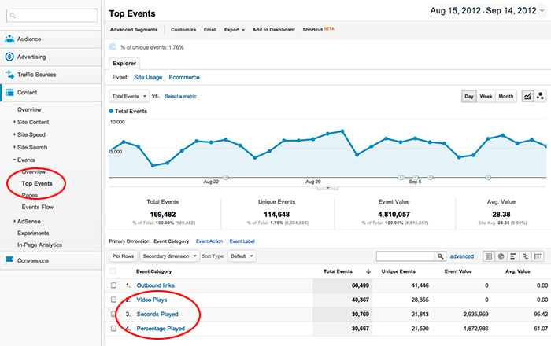
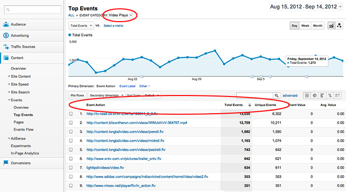

This guide explains how to enable and use the Google Analytics integration. It is available in the Premium and Ads editions of JW Player.
JW Player integrates with the Google Analytics service (GA) for pinging back the number of starts and completes for each of your videos. That way, your video metrics can be found right next to your page metrics.
The integration is straightforward, leveraging the GA <script> code available on the page the player is embedded on. This means Google Analytics for page tracking must always be embedded for JW Player to track video events.
JW Player leverages the so called Event Tracking functionality of Google Analytics to ping two types of events:
Inside the Google Analytics interface, these two events can be found under Content » Events:

Note that Google Analytics generally updates its data once per day. If you're just getting started with the GA integration, it may take until the next day for event data to first appear.
Each event in Google Analytics contains a category, action and label property. JW Player sets all three:
The Google Analytics interface can report events against any of these properties. For example, here is a report that shows the number of Video Plays for each video, by setting the action as primary dimension:

Note that, if you embed a video with multiple sources, the Google Analytics interface will display the URL of the first source for that video.
If you have the Google Analytics javascript on your page, the integration with JW Player is straightforward. Simply include the ga: {} block in your configuration options to enable it. Here's an example:
jwplayer("myElement").setup({
file: "/uploads/example.mp4",
image: "/uploads/example.jpg",
ga: {}
});
With this setup block added, JW Player will use the Google Analytics tracking code to fire an event every time a video starts or completes playback.
Again, note that Google Analytics is only available in the Premium and Ads editions of JW Player.
Two configuration options are available to tune the Google Analytics integration:
Here is an example embed code that sets both configuration options:
jwplayer("myElement").setup({
file: "/uploads/example.mp4",
image: "/uploads/example.jpg",
ga: {
actionproperty: "title",
trackerobject: "pageTracker"
}
});
With this setup, JW Player pings the title of videos instead of their URLs.
Second, JW Player will fire events using the global variable called pageTracker. Note that this name was traditionally used by Google Analytics, before they moved to asynchronous tracking using _gaq a few years ago.